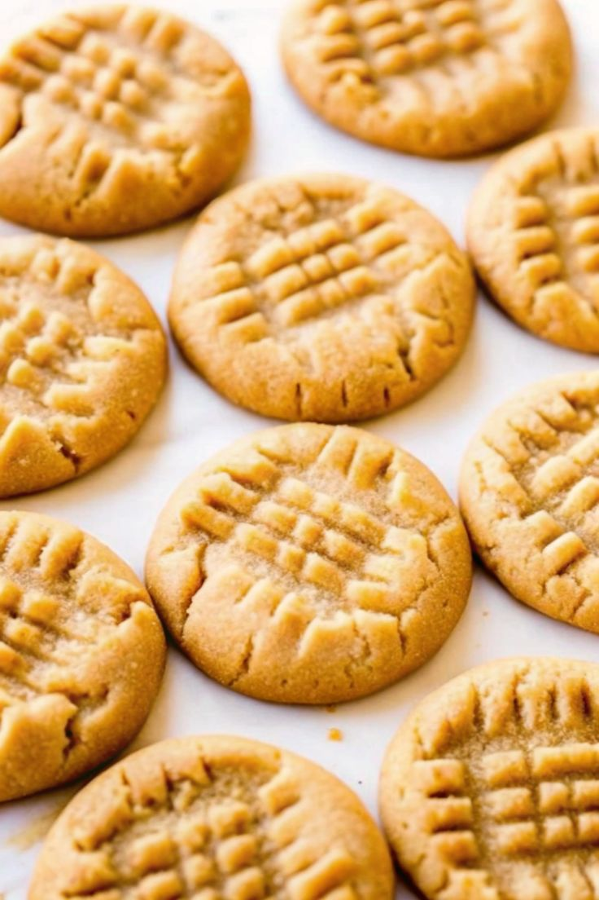

Peanut Butter Cookies

INGREDIENTS
Wet Ingredients
- 1 cup (226g) unsalted butter, softened to room temperature
- 1 cup (200g) granulated sugar
- 3/4 cup (150g) packed light brown sugar
- 2 large eggs, room temperature
- 2 teaspoons alcohol-free vanilla extract
- 1 cup (250g) creamy peanut butter
Dry ingredients
- 3 cups (375g) all-purpose flour (spooned and leveled)
- 1 teaspoon baking soda
- 1 teaspoon baking powder
- 1/2 teaspoon salt
- For rolling (optional)
- 1/3 cup (67g) granulated sugar
DIRECTIONS
- Cream the softened butter, granulated sugar, and brown sugar together in a large bowl using a hand or stand
mixer until smooth.
- Add the eggs one at a time, mixing well after each, then mix in the vanilla and peanut butter until fully
combined.
- In a separate bowl, whisk together the flour, baking soda, baking powder, and salt, then slowly add the dry
ingredients to the wet and mix on low until a thick, sticky dough forms.
- Cover the dough and chill it in the fridge for at least 3 hours, or up to 2 days if you get distracted and
forget about it like I did once.
- Preheat the oven to 350°F (177°C) and line two large baking sheets with parchment paper or silicone baking
mats.
- Roll balls of dough (about 1.5 tablespoons each), roll them in sugar if you like, and place them 2 inches
apart on the baking sheets.
- Press a fork into the tops to create the classic criss-cross pattern, then bake for 12 to 13 minutes until
the edges are lightly golden.
- Let the cookies cool on the baking sheet for 5 minutes, then move them to a wire rack to cool completely.
Thank you Take your recipes.com
Home